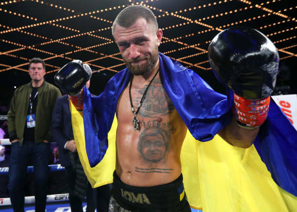
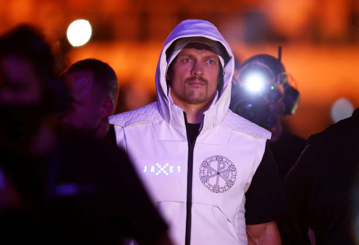
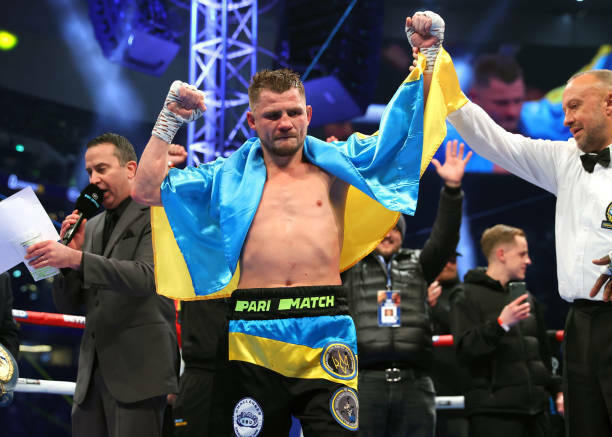

2022 рік був надскладним для українців в цілому, і український бокс постраждав не менше за інші галузі. Вечори, звісно ж, не організовувались, десятки бійців пішли на фронт, дуже багато боксерів залишилися без поєдинків. Все почало налагоджуватись наприкінці року, коли героїчні Збройні сили України завдяки неймовірним зусиллям зупинили навалу росіян. Василь Ломаченко, Олександр Усик та Денис Берінчик провели свої поєдинки та утвердились у майбутньому. Рік, що вже прийшов, має бути важливим та ледь не вирішальним для більшості чинних українських бійців.
Василь Ломаченко (17-2, 11 КО)
Ломаченко мав відбоксувати за всі титули легкого дивізіону ще у 2022 році. Але зустріч проти Джорджа Камбососа зірвалась через початок війни. Василь повернувся у ринг наприкінці року. Зустріч із Джемейном Ортісом вийшла непростою, бо американський проспект точно не збирався здаватись. Але Лома переміг.
Тепер попереду поєдинок з Девіном Хейні. Принаймні, команди обіцяють саме це. Про такий поєдинок говорить і команда Ломаченка, і команда Хейні, і сам Девін. Всі готові до організації, а молодь легкої категорії не боїться українського боксера. Вважають, що він втратив свою силу, і бачать, як можуть побити його. Дійсно багато, якщо не більшість експертів ставить на перемогу Хейні, і він, маючи габарити та молодість, має реальні шанси. Буде цікаво подивитись, чи витисне з себе Василь максимальні навички для чи не найважливішого поєдинку у кар’єрі.
Олександр Усик (20-0, 13 КО)
Реванш проти Ентоні Джошуа у Саудівській Аравії перетворився на величезне шоу та не менш круте випробування для обох спортсменів. Британець реально видав чи не найкращий поєдинок у кар’єрі. Зібрався фізично та морально, націлився на те, щоб перебоксувати чи нокаутувати українця, але у будь-якому випадку перемогти. Не склалось ні з тим, ні з тим. Олександр з надривом перебоксував Джошуа. Було неймовірно складно, довелось пережити супер складні моменти, але він впорався. Попереду тільки один – найважливіший виклик. Бій, після якого він або стане одним з найкращих супертяжів в історії, або затвердиться, як майстерний боєць, який не досяг лише неймовірних вершин.
Зустріч проти Тайсона Ф’юрі на етапі перемовин. Бійці зустрілись обличчям до обличчя, пообіцяли відбоксувати, але поки що нічого не підписано. Взагалі все виглядає так, неначе команди реально збираються підписати контракти. Чи вірити хоч чомусь, що каже Ф’юрі – питання цікаве. Тайсон часто змінює думку через настрій, але зараз, схоже, все ж збирається боксувати. Тому що на пенсії йому сумно. А серед чинних бійців не так багато суперників, з якими варто зустрітись. Є Ентоні Джошуа, з яким не склалось, і який зараз точно не хоче битись з Ф’юрі. Хіба що пізніше. Є Олександр Усик, бою проти якого всі чекають. Тому що це історична подія. І багато хто ставить на швидку перемогу британця. І є Джо Джойс, якого люблять у Великій Британії і який хоче бою проти Ф’юрі. На нього і може зістрибнути Тайсон. Але великі гроші та велика відповідальність має переважити все.
Денис Берінчик (17-0, 9 КО)
Непогане завершення 2022 року було і у Дениса Берінчика. Денис побив Івана Менді – достатньо відомого суперника з поясом чемпіона Європи за версією EBU. Після цього ж він підписав контракт з промоутерською компанію Френка Воррена.
Схоже, у 2023 році на українця очікують великі поєдинки. Боб Арум вже заговорив про зустріч проти Шакура Стівенсона. Наскільки це реально, взагалі неясно, тому що це було лише намацування варіантів від голови Top Rank. Але Денис явно серед кандидатів для Шакура на перший бій у легкій вазі. Якщо ні – навіть краще. Можна буде декілька разів відбоксувати проти бійців, що близькі до титулу. Варіантів у легкій вазі більш, ніж достатньо. Але будь-який бій у Європі проти гучного імені – чудово. І Воррен разом з Красюком точно дадуть Берінчику це у 2023 році.
Інші спортсмени:
- Сергій Дерев’янченко (14-4, 10 КО)
- Віктор Постол (31-4, 12 КО)
- Віктор Постол (31-4, 12 КО)
- Віктор Постол (31-4, 12 КО)
- Карен Чухаджян
- Тарас Шелестюк
- Владислав Сіренко
- Владислав Сіренко
Сергій Дерев’янченко (14-4, 10 КО) та Віктор Постол (31-4, 12 КО) у передпенсійному віці. Скоріш за все, завершать кар’єру за результатами 2023 року. Можливо, за два роки. Сергій повернувся перемогою над середняком, а на титули розраховувати зараз не варто. І не факт, що з’явиться шанс. Постол так взагалі програв Гері Расселлу – брату колишнього суперника Ломаченка. Вперше достроково у кар’єрі. Карен Чухаджян провів непоганий поєдинок в США. Але атакував мало і розраховувати на повторне швидке запрошення не варто. Тому що занадто складний та не принесе грошей. Але переможе у цьому році хоча б раз. Тарас Шелестюк, скоріше за, все повернеться. Але на які перспективи розраховувати – неясно. У колишнього олімпійця справи складаються не найкращим чином навіть із потенційно цікавими компаніями. А часу розкручуватися вже майже немає. Владислав Сіренко повернеться поєдинком проти міцного середняка. Він має домовленості в США, проводить там купу часу, тренується з американським тренером. Минулий рік Влад провів без поєдинків, але він ще встигне наздогнати своє.